In embodied vision-language decision making tasks such as robotic manipulation and navigation,
Vision-Language and Vision-Language-Action Models (VLMs & VLAs) are powerful tools with
different benefits: VLMs are better at long-term planning, while VLAs are better at reactive
control. However, their performance is limited by the same perceptual bottleneck: visual
hallucinations arise due to the models' inability to distinguish task-relevant objects from
distractors. In principle, accurate identification and focus on critical objects while filtering
out irrelevant ones is the key to break this limitation. A straightforward solution is one-step
focus: directly attending to essential objects. However, this approach proves ineffective because
effective focus inherently requires deep scene understanding. To this end, we propose
SceneDiver, a coarse-to-fine focus plan generation method for VLMs leveraging their
long-term planning abilities, that first constructs a holistic scene graph to establish initial
comprehension, then progressively decomposes the task into simpler sub-problems through an
iterative cycle of recognition, understanding, and analysis. To enable reactive control, we also
design a lightweight adapter for distilling the deliberate focus ability into VLAs. Evaluations
on standard embodied AI benchmarks confirm that our method substantially reduces visual
hallucinations for both VLMs and VLAs, while preserving computational efficiency in tasks
requiring fast execution.
Method
Part 1
Focus Plan Generation
SceneDiver uses deliberate VLM reasoning to progressively turn a cluttered observation into a task-focused visual input.
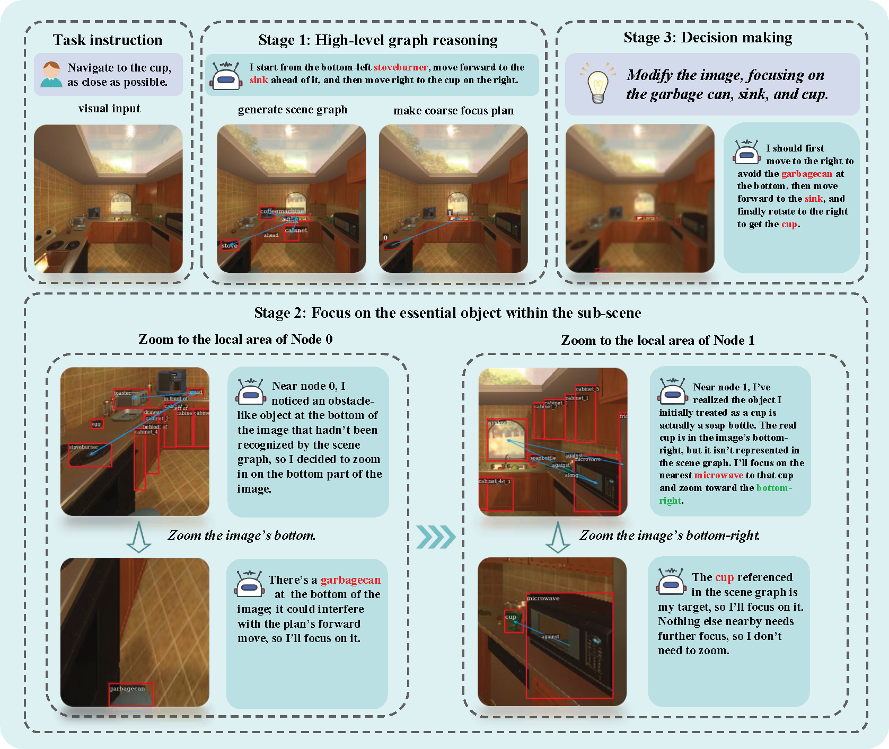
Click for details
Collapse
Step 01
Observe the scene and generate a global scene graph.
The agent observes the raw scene and task context, and invokes OvSGTR to generate a coarse scene graph.
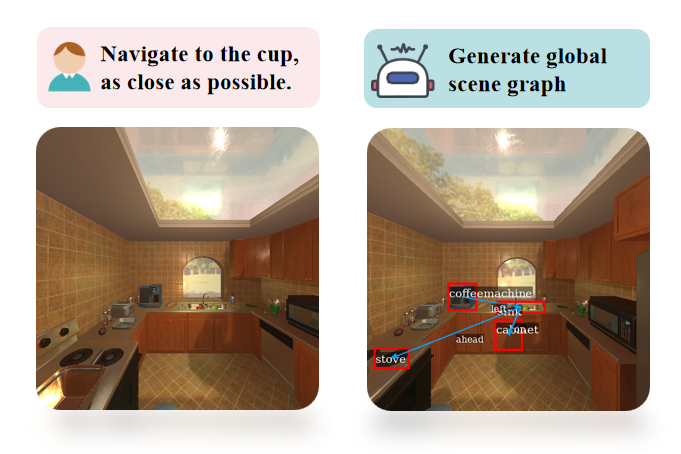
Step 02
Choose coarse focus regions
High-level graph reasoning filters the scene into task-relevant sub-scenes instead of focusing in one jump.
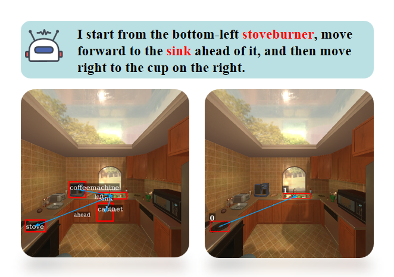
Step 03
Fine stage: inspect candidates
The selected regions are examined sequentially to verify candidate evidence under a limited perception field.
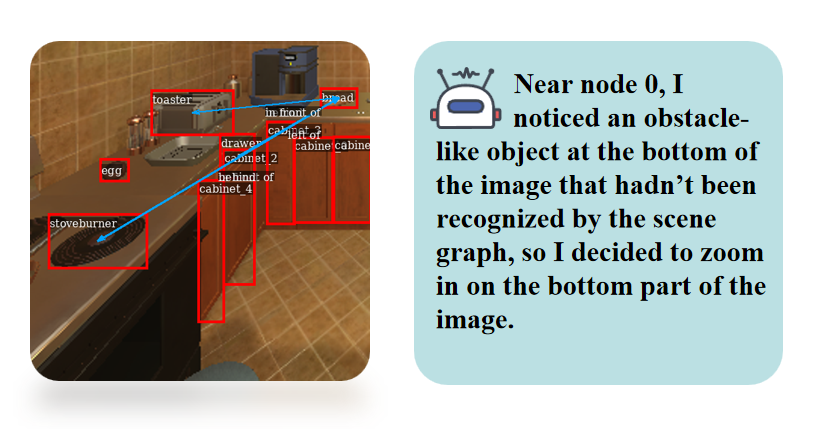
Zoom in
Step 04
Zoomed local inspection
SceneDiver zooms into the candidate region from the previous step to recover fine details and refine the focus decision.
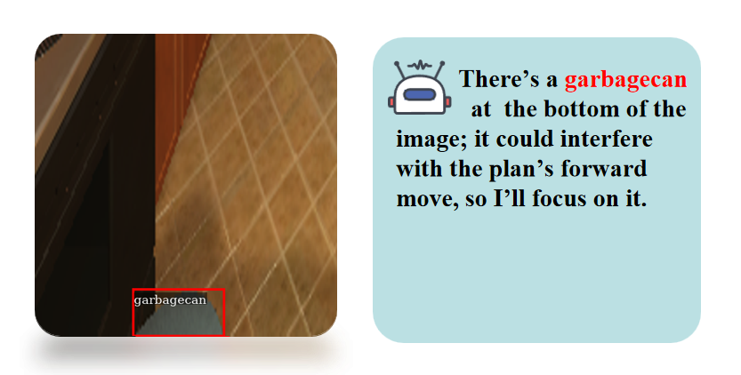
Step 05
Summarize focus and act
The verified focus evidence is aggregated into a soft mask, used to modify the observation, and then passed to the VLM or VLA for final decision making.
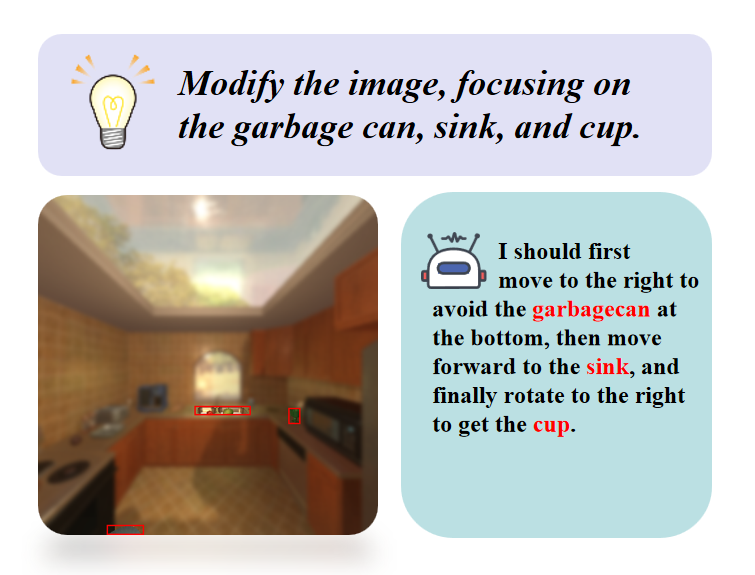
Part 2
Lightweight Adapter for VLAs
The adapter transfers the deliberate focus ability into fast VLA control without requiring the VLM reasoning loop at every action step.
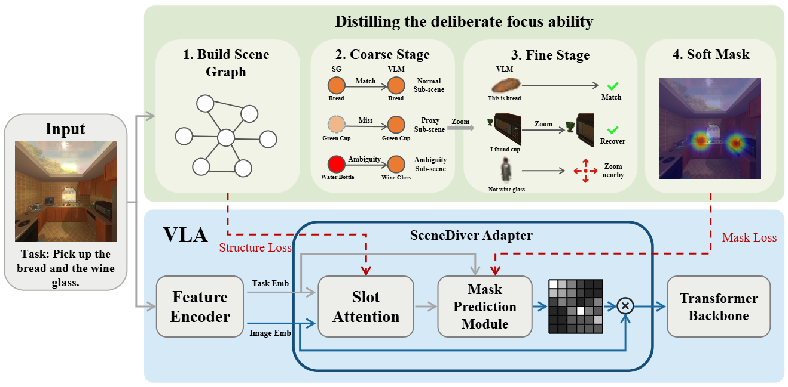
Key idea
SceneDiver supervises the VLA adapter with structure loss and mask loss, distilling the deliberate focus ability into slot attention and mask prediction modules for reactive control.
SceneDiver in Action
Single Rollout Trace
MuJoCo Robot Manipulation Case
One complete SceneDiver run, from the raw camera observation to the final focus-modulated input used for downstream decision making.
Focus plan generated
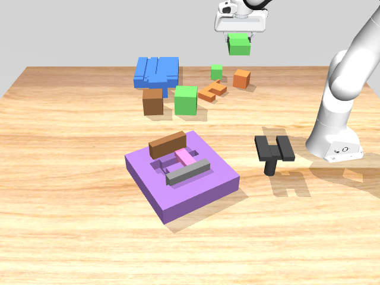
01 / Input
Receive the raw observation
The rollout begins with a cluttered camera view where task-relevant objects and distractors appear together.
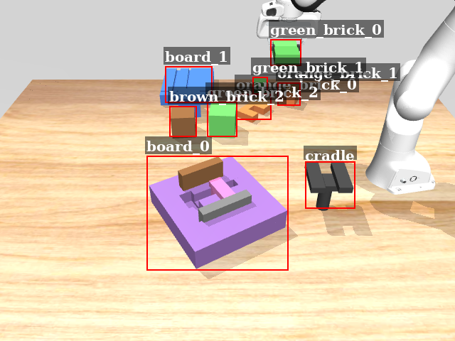
02 / Parse
Construct object-level context
SceneDiver identifies candidate objects and builds a scene graph to ground later focus decisions in the observed layout.
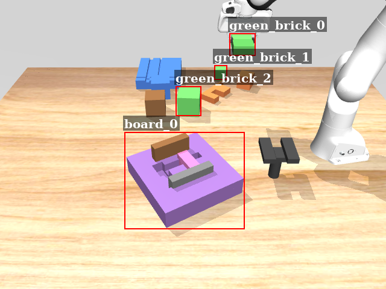
03 / Coarse Focus
Select task-relevant regions
Graph-level reasoning narrows the search to sub-scenes that are likely to matter for the current manipulation instruction.
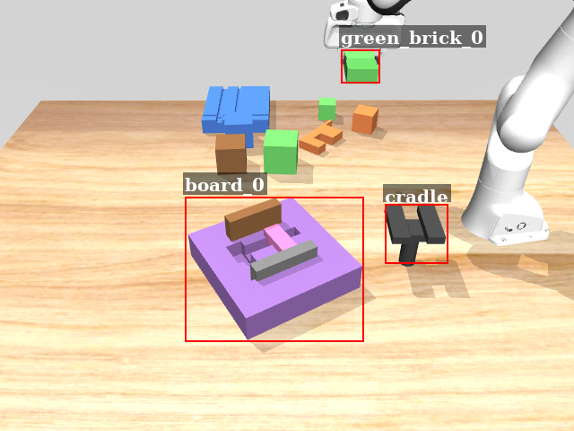
04 / Fine Focus
Verify local evidence
The selected regions are inspected in sequence, allowing the model to keep useful evidence and discard misleading candidates.
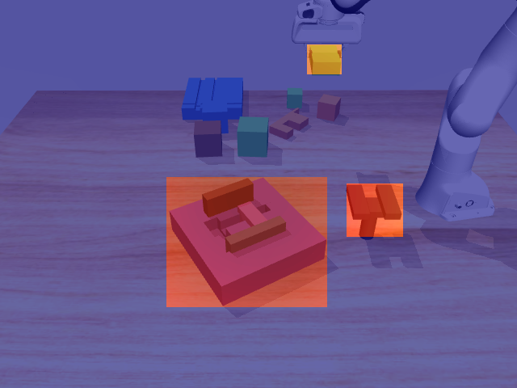
05 / Score Map
Aggregate focus confidence
The accepted regions are converted into a pixel-level score map that records where the model should attend.
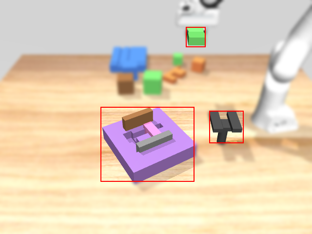
06 / Output
Produce the modulated observation
The final image highlights target evidence and suppresses irrelevant visual clutter before the policy makes its decision.
Results
Quantitative Results
Robotic Manipulation
A robotic-arm task in MuJoCo. We report performance using success rate, higher values indicate better performance unless otherwise specified.
All results are averaged over five independent runs with different random seeds, and we report mean and standard errors (in the parentheses).
Model
Base
Focus
Qwen2.5-VL-7B-Instruct-AWQ
14.7 (1.8)
28.7 (1.6)
Qwen2.5-VL-32B-Instruct-AWQ
21.3 (1.2)
31.3 (0.8)
gpt-4o-mini
28.7 (1.6)
34.0 (1.2)
gemini-2.5-flash
38.7 (1.2)
46.7 (1.0)
Room Navigation
We evaluate our model on a slightly modified version of the Room Navigation task in
EmbodiedBench.
Following EmbodiedBench’s capability-oriented evaluation protocol, we report results across four subsets:
Base, CS (Common Sense), CI (Complex Instruction), and VA (Visual Appearance).
For each method, we conduct five independent runs with different random seeds and report the mean and standard errors (in the parentheses).
Open-Source Models
Model
Method
Base
CS
CI
VA
Qwen2.5-VL-7B-Instruct-AWQ
Base Model
32.7 (1.5)
30.7 (0.6)
32.0 (1.2)
27.3 (2.4)
SoM
30.0 (0.9)
31.3 (1.2)
31.3 (1.8)
29.3 (2.2)
Multi-Res
29.3 (1.7)
32.7 (0.6)
34.0 (1.1)
29.3 (1.1)
VCD
34.7 (2.0)
32.0 (2.2)
32.7 (2.4)
33.3 (2.1)
Ours
44.0 (1.1)
36.0 (0.6)
37.3 (0.6)
35.3 (0.7)
Qwen2.5-VL-32B-Instruct-AWQ
Base Model
49.3 (1.1)
43.3 (1.9)
46.7 (1.3)
43.3 (0.9)
SoM
49.3 (1.1)
44.7 (1.2)
48.0 (0.7)
44.7 (1.5)
Multi-Res
52.7 (1.1)
46.7 (1.6)
49.3 (1.1)
45.3 (2.0)
VCD
51.3 (1.5)
46.0 (1.5)
45.3 (1.5)
46.0 (1.1)
Ours
56.7 (1.3)
52.7 (1.1)
53.3 (0.9)
49.3 (1.1)
InternVL2.5-8B
Base Model
29.3 (1.1)
22.7 (1.1)
24.0 (1.1)
21.3 (1.5)
SoM
28.0 (1.5)
24.0 (1.1)
23.3 (0.9)
24.0 (1.1)
Multi-Res
31.3 (2.8)
20.7 (0.6)
30.7 (1.5)
22.7 (1.1)
VCD
33.3 (1.3)
24.7 (2.0)
28.0 (0.7)
23.3 (0.9)
Ours
39.3 (0.7)
32.7 (0.6)
33.3 (1.1)
25.3 (0.7)
Closed-Source Models
Model
Method
Base
CS
CI
VA
gpt-4o-mini
Base Model
43.3 (1.6)
37.3 (2.4)
38.7 (1.5)
37.3 (1.7)
SoM
41.3 (0.7)
38.0 (2.0)
36.0 (1.1)
38.7 (1.5)
Multi-Res
44.7 (1.5)
38.7 (1.2)
41.3 (2.0)
43.3 (1.9)
Thinking
-
-
-
-
Ours
50.0 (0.9)
53.3 (0.9)
49.3 (1.1)
49.3 (0.6)
gemini-2.5-flash
Base Model
68.0 (1.1)
62.0 (0.7)
60.0 (0.9)
55.3 (1.2)
SoM
69.3 (1.1)
62.7 (1.7)
60.7 (2.4)
56.0 (2.6)
Multi-Res
70.0 (1.9)
60.7 (1.5)
61.3 (2.0)
58.0 (2.9)
Thinking
70.0 (1.3)
63.3 (1.3)
63.3 (1.9)
56.7 (1.0)
Ours
74.7 (1.2)
65.3 (0.7)
66.0 (0.6)
62.0 (1.2)
doubao-seed-1.6-flash
Base Model
59.3 (1.1)
40.0 (1.3)
38.0 (2.2)
32.7 (1.5)
SoM
60.7 (2.6)
40.0 (1.6)
40.7 (1.1)
34.0 (0.6)
Multi-Res
62.0 (2.4)
41.3 (2.0)
42.0 (1.2)
37.3 (2.4)
Thinking
60.7 (2.2)
41.3 (1.2)
43.3 (1.0)
36.7 (1.3)
Ours
66.0 (1.1)
48.0 (0.7)
48.7 (1.2)
44.7 (0.7)
LIBERO-plus
We evaluate our adapter on the
LIBERO-Plus
benchmark using
OpenVLA-OFT
as the base model. Specifically, we compare the original OpenVLA-OFT model with OpenVLA-OFT equipped with our adapter.
For each method, we conduct three independent runs with different random seeds and report the mean performance, with the standard error shown in parentheses.
Task Suite
Variation
Baseline
SceneDiver
Gain
Spatial
Objects Layout
92.39±0.27%
94.43±0.41%
+2.04
Camera Viewpoints
49.16±0.56%
54.35±0.99%
+5.19
Robot Initial States
19.91±0.74%
29.49±0.30%
+9.58
Background Textures
82.67±0.79%
87.41±0.40%
+4.74
Light Conditions
93.86±0.18%
97.37±0.88%
+3.51
Object
Objects Layout
76.01±0.27%
76.82±0.27%
+0.81
Camera Viewpoints
62.50±0.51%
64.56±0.86%
+2.06
Robot Initial States
14.36±0.27%
15.72±0.00%
+1.36
Background Textures
89.74±0.66%
90.61±1.53%
+0.87
Light Conditions
98.99±0.67%
99.50±0.17%
+0.51
Goal
Objects Layout
49.36±0.25%
52.53±0.38%
+3.17
Camera Viewpoints
51.02±0.43%
52.74±0.72%
+1.72
Robot Initial States
12.56±0.26%
18.85±0.00%
+6.29
Background Textures
81.78±0.40%
91.09±1.21%
+9.31
Light Conditions
93.94±0.76%
97.35±0.76%
+3.41
Long
Objects Layout
65.28±0.76%
74.52±0.56%
+9.24
Camera Viewpoints
40.13±0.40%
42.97±0.54%
+2.84
Robot Initial States
32.32±0.40%
37.73±0.00%
+5.41
Background Textures
81.07±0.00%
90.00±0.00%
+8.93
Light Conditions
84.47±0.76%
92.42±0.00%
+7.95
Ablation
Ablation results on the Room Navigation benchmark. We report success rate (%)
over five random seeds; CS, CI, and VA denote Common Sense, Complex Instruction,
and Visual Appearance, respectively.
Open-Source Models
Model
Method
Base
CS
CI
VA
Qwen2.5-VL-7B-Instruct-AWQ
Base Model
32.7 (1.5)
30.7 (0.6)
32.0 (1.2)
27.3 (2.4)
Ablation1
30.7 (1.1)
28.0 (0.7)
34.7 (1.8)
31.3 (1.5)
Ablation2
34.0 (2.2)
31.3 (0.7)
32.7 (0.6)
30.0 (0.0)
Ablation3
37.3 (0.6)
31.3 (1.2)
34.7 (0.7)
32.0 (1.5)
Ours
44.0 (1.1)
36.0 (0.6)
37.3 (0.6)
35.3 (0.7)
Qwen2.5-VL-32B-Instruct-AWQ
Base Model
49.3 (1.1)
43.3 (1.9)
46.7 (1.3)
43.3 (0.9)
Ablation1
50.7 (0.6)
45.3 (1.5)
49.3 (1.7)
45.3 (0.7)
Ablation2
51.3 (1.2)
46.7 (0.9)
48.0 (0.7)
45.3 (0.7)
Ablation3
52.0 (0.7)
46.7 (1.6)
48.7 (1.8)
46.0 (0.6)
Ours
56.7 (1.3)
52.7 (1.1)
53.3 (0.9)
49.3 (1.1)
InternVL2.5-8B
Base Model
29.3 (1.1)
22.7 (1.1)
24.0 (1.1)
21.3 (1.5)
Ablation1
31.3 (0.7)
25.3 (1.5)
26.0 (1.5)
23.3 (0.9)
Ablation2
32.7 (0.6)
27.3 (1.1)
28.7 (0.7)
22.7 (1.1)
Ablation3
37.3 (0.6)
28.7 (1.8)
27.3 (1.5)
23.3 (1.3)
Ours
39.3 (0.7)
32.7 (0.6)
33.3 (1.1)
25.3 (0.7)
Closed-Source Models
Model
Method
Base
CS
CI
VA
gpt-4o-mini
Base Model
43.3 (1.6)
37.3 (2.4)
38.7 (1.5)
37.3 (1.7)
Ablation1
44.0 (1.5)
38.7 (2.0)
40.7 (1.1)
39.3 (1.1)
Ablation2
44.0 (1.5)
44.0 (1.1)
44.7 (0.7)
42.7 (0.6)
Ablation3
46.0 (1.1)
47.3 (0.6)
42.7 (0.6)
44.0 (1.1)
Ours
50.0 (0.9)
53.3 (0.9)
49.3 (1.1)
49.3 (0.6)
gemini-2.5-flash
Base Model
68.0 (1.1)
62.0 (0.7)
60.0 (0.9)
55.3 (1.2)
Ablation1
68.7 (2.0)
62.7 (0.6)
61.3 (0.7)
56.0 (1.1)
Ablation2
70.7 (0.6)
64.0 (0.6)
63.3 (1.9)
58.7 (0.7)
Ablation3
72.7 (0.6)
63.3 (0.9)
63.3 (2.1)
57.3 (1.7)
Ours
74.7 (1.2)
65.3 (0.7)
66.0 (0.6)
62.0 (1.2)
doubao-seed-1.6-flash
Base Model
59.3 (1.1)
40.0 (1.3)
38.0 (2.2)
32.7 (1.5)
Ablation1
60.7 (0.6)
41.3 (0.7)
39.3 (1.5)
36.0 (1.5)
Ablation2
62.7 (1.1)
44.0 (1.1)
41.3 (1.8)
40.0 (1.6)
Ablation3
63.3 (1.3)
46.0 (1.1)
40.7 (1.8)
40.7 (1.5)
Ours
66.0 (1.1)
48.0 (0.7)
48.7 (1.2)
44.7 (0.7)
Latency
Detailed latency profiling and tail latency analysis. All latency values are reported in milliseconds.
Module
Mean
Median
P95
P99
Percentage
Action (Total)
114.45
113.81
116.50
121.78
100.00%
SlotAttention
2.18
2.16
2.30
2.33
1.91%
MaskNet
0.83
0.83
0.86
0.87
0.73%
Qualitative Results
Navigation
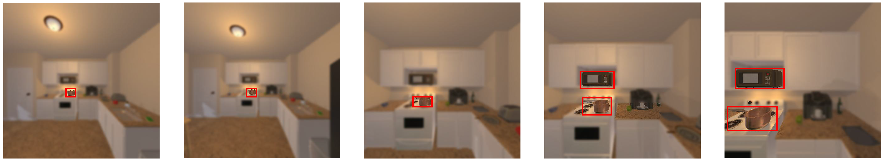
Instruction: navigate to the Pot in the room and be as close as possible to it.
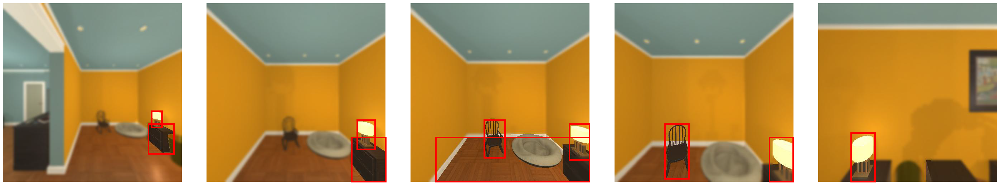
Instruction: navigate to the DeskLamp in the room and be as close as possible to it.
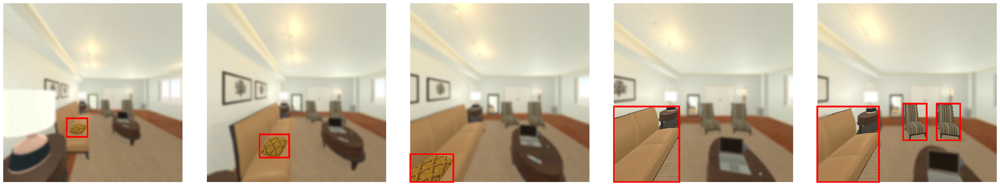
Instruction: I need a soft cushion to support my head while sleeping. Can you navigate to that object and stay close?
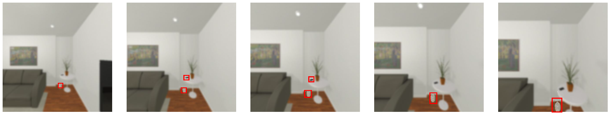
Instruction: I'd like to view a decorative sculpture representing a figure or person. Can you navigate to that object and stay close?
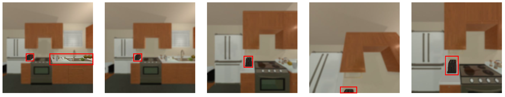
Instruction: The sound of someone walking upstairs adds a subtle rhythm to the quiet morning. There's a folded towel on the counter, and the air smells faintly of butter. Could you navigate to the toaster for me? It's a peaceful start to the day.
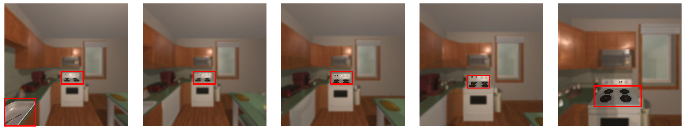
Instruction: The rhythmic ticking of the kitchen clock blends with the occasional drip from the faucet. There's a small pile of onions on the table, freshly chopped. Please move towards the stove burner for me. The kitchen has a comforting hum to it.
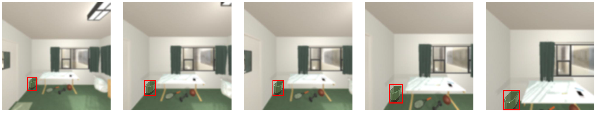
Instruction: Approach the tall green container with a smooth texture.
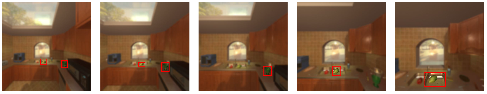
Instruction: Move closer to the small round object with a green surface and a cylindrical shape.
LIBERO-plus
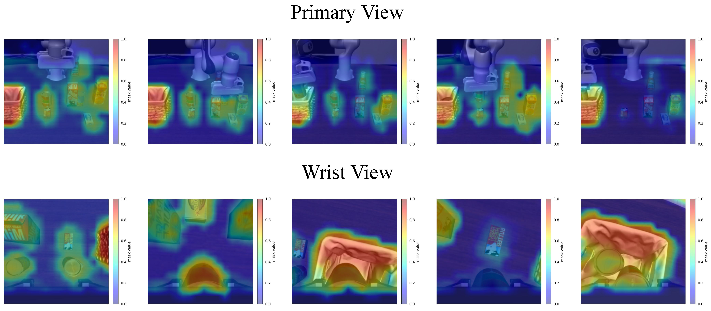
Instruction: Put both the alphabet soup and the tomato sauce in the basket.
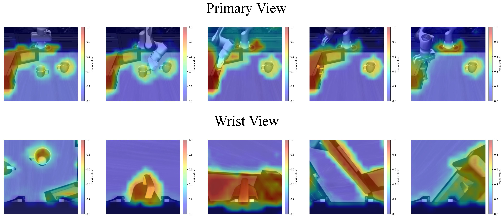
Instruction: Put the yellow and white mug in the microwave and close it.
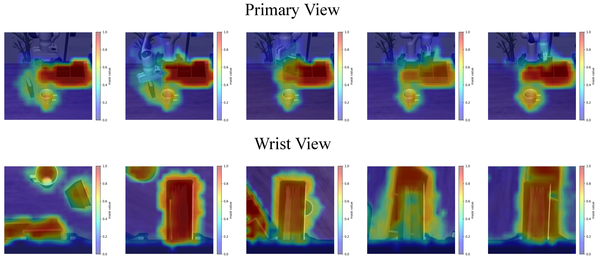
Instruction: Pick up the book and place it in the back compartment of the caddy.
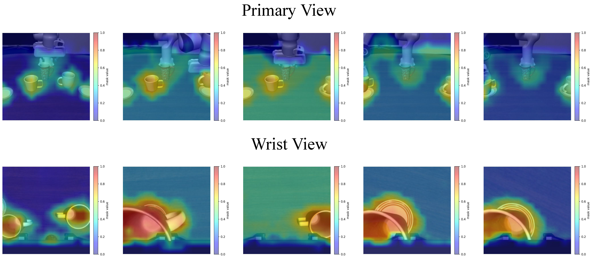
Instruction: Put the white mug on the left plate and put the yellow and white mug on the right plate.
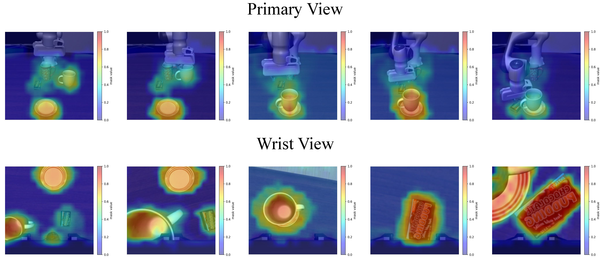
Instruction: Put the white mug on the plate and put the chocolate pudding to the right of the plate.
BibTeX
@misc{xiao2026divescenebreakingperceptual,
title={Dive into the Scene: Breaking the Perceptual Bottleneck in Vision-Language Decision Making via Focus Plan Generation},
author={Boyuan Xiao and Bohong Chen and Yumeng Li and Ji Feng and Yao-Xiang Ding and Kun Zhou},
year={2026},
eprint={2606.04046},
archivePrefix={arXiv},
primaryClass={cs.CV},
url={https://arxiv.org/abs/2606.04046},
}